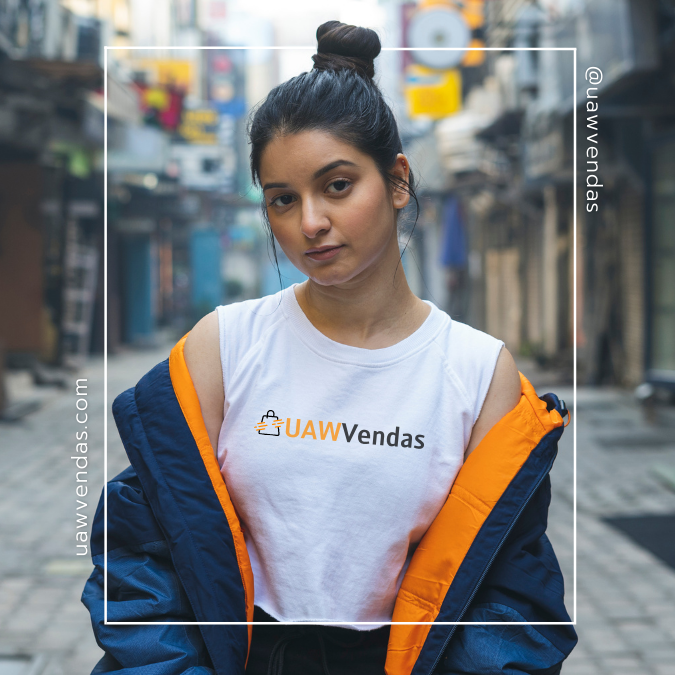

Projetos
Esse é meu 1º site feito por mim, em HTML e CSS. Ele foi programado como objeto de estudo do curso "A partir do zero: iniciante em programação" da plataforma de ensino tech Alura.
A UAW Vendas foi de extrema importância para minha alavancada no mundo do Marketing Digital, Negócios Digitais, Startups e Empreendedorismo. Feita na plataforma Shopfy, foi um e-commerce que vendeu produtos dos mais variados tipos: o cliente via o anúncio de um produto, entrava em sua página, ia para um checkout limpo e, em segundos, tinha seu pagamento aprovado com a total segurança, com uma entrega de qualidade. A loja no momento está pausada, porém a nossa trajetória ainda vai muito longe.
